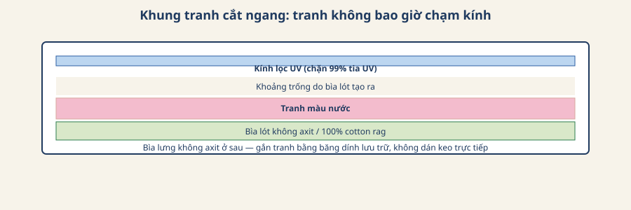

Giữ tranh màu nước khỏi phai và ẩm: treo, đóng khung và cất giữ
Tác giả: Ruler
Bạn đã vẽ xong những bức tranh đầu tiên: hoa lá, phong cảnh, núi và trăng. Giờ bạn cần giữ chúng. Màu nước vẽ trên giấy nên nhạy cảm hơn sơn dầu hay acrylic: giấy phản ứng với độ ẩm, ánh sáng và vật liệu xung quanh nó. Russell Collection viết rằng tranh màu nước trên giấy dễ bị tổn thương hơn sơn dầu hay acrylic, và khung tranh không chỉ là lựa chọn trưng bày, mà là hệ thống bảo vệ chính của bức tranh. Bài này dạy bạn 4 mối đe dọa lớn nhất với tranh màu nước, cách cất tranh chưa đóng khung, cách đóng khung đúng, và cách treo tranh sao cho màu không phai. Bài này không dạy bạn đóng khung chuyên nghiệp, mà dạy bạn hiểu đủ để chọn đúng vật liệu và nói chuyện được với thợ đóng khung.

Sơ đồ minh họa tự vẽ — không phải ảnh chụp. Khung tranh cắt ngang: kính ở ngoài, khoảng trống do bìa lót tạo ra, tranh ở giữa, bìa lót không axit ở sau. Tranh không bao giờ chạm kính.
4 mối đe dọa lớn nhất với tranh màu nước
Russell Collection liệt kê 4 mối đe dọa chính với tranh màu nước không được bảo vệ: tia cực tím (UV) từ ánh sáng ban ngày và đèn huỳnh quang làm phai màu và làm tối giấy; độ ẩm làm giấy cong, mốc và làm màu loang; axit từ vật liệu xung quanh, ví dụ bìa lót thường và bìa cứng, làm giấy vàng và giòn theo thời gian; và tiếp xúc vật lý, ví dụ tranh chạm kính, làm màu dính vào kính và bong ra khi gỡ.
Bạn hiểu 4 mối đe dọa này là bạn hiểu toàn bộ bài này. Mọi cách giữ tranh đều nhắm vào một trong 4 mối đe dọa đó: kính lọc UV chặn tia cực tím, bìa lót không axit chặn axit, khoảng trống giữa tranh và kính chặn tiếp xúc vật lý, và khung kín cộng với chỗ treo khô ráo chặn độ ẩm. Bạn không cần nhớ tên vật liệu chuyên nghiệp, bạn chỉ cần nhớ 4 mối đe dọa và hỏi thợ đóng khung: vật liệu này chặn được mối đe dọa nào.
Bạn cũng cần biết một điều: màu nước là một trong những loại tranh nhạy cảm nhất với ánh sáng. Russell Collection viết rằng tia UV có thể bắt đầu làm giảm chất lượng màu chỉ trong vài ngày nếu tranh không được bảo vệ. Bạn không treo tranh màu nước ở nơi nắng chiếu trực tiếp, dù chỉ vài giờ mỗi ngày, vì màu sẽ phai dần mà bạn không nhận ra cho đến khi quá muộn.
Cất tranh chưa đóng khung: phẳng, khô, không axit
Tranh chưa đóng khung là tranh dễ hỏng nhất, vì nó không có gì bảo vệ. Bạn cất tranh chưa đóng khung theo 3 nguyên tắc: phẳng, khô và không axit.
Phẳng. Bạn cất tranh nằm phẳng, không cuộn tròn, không gấp. Bạn đặt tranh giữa hai tờ bìa cứng sạch, hoặc trong một tập hồ sơ phẳng. Bạn không đặt vật nặng lên trên tranh, vì vật nặng sẽ làm lõm giấy và làm nứt lớp màu. Bạn không cất tranh trong ống cuộn, vì giấy màu nước khi cuộn sẽ giữ nếp gấp và khó phẳng lại.
Khô. Bạn cất tranh ở nơi khô ráo, thoáng khí, không ẩm. Bạn không cất tranh ở tầng hầm ẩm, nhà tắm hay gần cửa sổ bị dột. Bạn không để tranh trực tiếp trên sàn nhà, vì sàn nhà ẩm hơn không khí. Bạn đặt tranh trên kệ cao hơn mặt đất, và bạn kiểm tra tranh mỗi vài tháng xem có đốm mốc hay mùi ẩm không.
Không axit. Bạn đặt tranh giữa các tờ giấy không axit, hoặc trong túi nhựa không axit chuyên dùng cho tranh. Bạn không dùng giấy báo hay bìa cứng thường để lót tranh, vì chúng chứa axit và sẽ làm vàng mép tranh theo thời gian. Bạn không dùng băng dính thường để dán tranh, vì keo băng dính thường sẽ vàng và làm hỏng giấy. Bạn chỉ dùng băng dính chuyên dụng không axit, hoặc kẹp tranh bằng kẹp giấy sạch.
Bạn ghi ngày vẽ và tên bức tranh ở mặt sau tờ giấy bằng bút chì nhẹ, không dùng bút mực, vì mực có thể thấm qua giấy. Bạn ghi cả màu bạn dùng, vì sau này bạn muốn vẽ lại bức tranh đó, bạn sẽ biết mình đã dùng màu nào.
Đóng khung đúng: 4 bộ phận của một khung tranh
Russell Collection viết rằng một hệ thống khung tranh hoàn chỉnh có 4 bộ phận làm việc cùng nhau: khung gỗ hoặc kim loại, bìa lót (mat board), kính hoặc mica (glazing), và bìa lưng (backing board). Bạn hiểu 4 bộ phận này là bạn biết mình cần hỏi thợ đóng khung những gì.
Bìa lót: tạo khoảng trống giữa tranh và kính. Đây là quy tắc quan trọng nhất trong cả bài này: tranh không bao giờ được chạm kính. Russell Collection viết rằng quy tắc này áp dụng cho mọi khung tranh màu nước, không có ngoại lệ: tranh chạm kính sẽ bị đọng hơi nước, mọc mốc và hỏng bề mặt, thường là hỏng vĩnh viễn. Bìa lót tạo ra khoảng trống vật lý giữa kính và mặt tranh. Không có bìa lót, toàn bộ hệ thống khung tranh sẽ thất bại ở chức năng cơ bản nhất của nó.
Bạn chọn bìa lót không axit hoặc 100% vải cotton (cotton rag). Bruce Black viết rằng bạn phải hỏi thợ đóng khung dùng bìa 100% Cotton Rag hoặc Museum Board, vì bìa giấy thường chứa axit (lignin) sẽ làm cháy và vàng mép tranh của bạn theo năm tháng. Masten viết rằng dùng bìa lót không axit, đạt chuẩn lưu trữ, là điều bắt buộc để tránh tranh bị vàng hoặc xuống cấp theo thời gian. Bạn có hai cách trình bày bìa lót: bìa cửa sổ truyền thống, là bìa cắt một ô cửa sổ vát mép chồng lên mép tranh; và bìa nổi (float mount), là tranh đặt hoàn toàn trên bìa lưng không axit, để lộ mép giấy thô đẹp của tranh, và dùng miếng đệm giấu trong mép khung để giữ kính cách xa tranh.
Kính hoặc mica: chặn tia cực tím. Bruce Black viết rằng vì tia cực tím là kẻ thù tự nhiên của màu nước, chọn kính là khoản đầu tư quan trọng nhất bạn sẽ làm. Bạn có hai lựa chọn chính: kính lọc UV (Conservation Clear Glass) chặn 99% tia UV, là lựa chọn nền tảng tốt; và kính bảo tàng (Museum Glass) cũng chặn 99% tia UV, nhưng thêm lớp phủ chống phản chiếu, trong đến mức thường trông như không có kính, để vân giấy hiện ra rõ ràng. Masten viết rằng kính hoặc mica lọc UV chất lượng bảo tàng làm giảm đáng kể tia cực tím gây phai màu mà không làm giảm độ rõ của tranh. Mica nhẹ hơn và khó vỡ hơn kính, hợp treo ở nơi đông người hoặc cần vận chuyển tranh, nhưng mica dễ xước hơn và đôi khi hút bụi.
Bìa lưng: đệm môi trường. Bìa lưng đỡ tranh từ phía sau và ngăn độ ẩm thay đổi từ phía sau. Russell Collection viết rằng bìa lưng phải không thải khí: bạn dùng bìa xốp lưu trữ hoặc bìa không axit, và tránh bìa cứng thường vì nó chứa axit có hại. Bạn không dùng bìa cứng thường làm bìa lưng, dù nó rẻ hơn, vì axit trong bìa cứng sẽ ngấm vào tranh theo thời gian.
Khung: đủ sâu để chứa mọi thứ. Bạn chọn khung đủ sâu để chứa kính, bìa lót, tranh và bìa lưng mà không bị phồng ra. Masten viết rằng khung sâu, có rãnh đủ sâu để chứa bộ khung dày, là điều bắt buộc, đặc biệt khi dùng bìa nổi hoặc bìa đôi. Bạn chọn khung mỏng và nhẹ, bằng gỗ tự nhiên hoặc kim loại, để không lấn át tranh màu nước vốn nhẹ và mỏng manh.
Gắn tranh: dán bản lề, không dán keo trực tiếp. Masten viết rằng bạn tránh dán trực tiếp tranh lên bìa lót hoặc bìa lưng, vì keo có thể gây hỏng vĩnh viễn. Bạn gắn tranh bằng băng dính lưu trữ dán bản lề, hoặc dùng kẹp góc, để tranh nằm chắc chắn mà vẫn có thể tháo ra để bảo quản khi cần. Bạn không dùng băng dính thường, không dùng keo dán, không ghim tranh.
Treo tranh ở đâu: tránh nắng trực tiếp, dùng đèn LED
Bạn đóng khung đúng rồi, giờ bạn treo tranh ở đâu cũng quan trọng không kém. Bruce Black viết rằng nơi bạn treo tranh màu nước quan trọng không kém cách bạn đóng khung nó.
Không treo tranh ở nơi nắng chiếu trực tiếp. Bruce Black viết rằng bạn không bao giờ treo tranh màu nước trên bức tường nhận ánh nắng trực tiếp và kéo dài. Bạn chọn bức tường có ánh sáng gián tiếp, sáng nhưng không có nắng chiếu thẳng. Bạn không treo tranh đối diện cửa sổ hướng tây, nơi nắng chiều chiếu thẳng vào tranh nhiều giờ mỗi ngày. Bạn treo tranh ở hành lang, phòng khách có rèm, hoặc bức tường không có cửa sổ đối diện.
Dùng đèn LED, không dùng đèn sợi đốt hay halogen. Bruce Black viết rằng nếu bạn muốn chiếu sáng tranh bằng đèn tranh, bạn luôn dùng bóng đèn LED. Bóng đèn sợi đốt hay halogen cũ phát ra tia UV và nhiệt mạnh, có thể làm giấy bị nóng và hỏng. Đèn LED không phát ra tia UV và chạy hoàn toàn mát. Bruce Black viết rằng tiêu chuẩn bảo quản bảo tàng quy định tranh màu nước chỉ nên được chiếu sáng tối đa 50 lux, khoảng 5 foot-candle, trực tiếp lên bề mặt tranh. Bạn dùng bóng đèn LED công suất thấp, khoảng 200 đến 400 lumen, là đủ sáng để xem tranh mà không làm hại tranh.
Kiểm tra tranh định kỳ. Bạn kiểm tra tranh đã đóng khung mỗi vài năm một lần, xem có dấu hiệu phai màu, mốc, hay bìa lót bị vàng không. Chris Paschke, chuyên gia đóng khung viết trên tạp chí Watercolor Artist, khuyên bạn kiểm tra tranh ít nhất mỗi 5 năm một lần để phát hiện hỏng hóc do ánh sáng, độ ẩm, côn trùng và ô nhiễm, ngay cả khi tranh đã được đóng khung đúng cách. Bạn mang tranh ra thợ đóng khung để kiểm tra nếu bạn thấy mép tranh bị vàng, màu bị nhạt đi, hay có đốm mốc trong khung.
3 lỗi hay gặp nhất khi đóng khung tranh màu nước
Masten liệt kê 3 lỗi hay gặp nhất khi đóng khung tranh màu nước, và bạn tránh cả 3 lỗi này là tranh của bạn đã được bảo vệ tốt.
Lỗi 1: dùng kính thường hoặc bìa lót không đạt chuẩn lưu trữ. Kính thường không chặn tia UV, bìa lót thường chứa axit, cả hai đều làm tranh phai màu và giấy xuống cấp nhanh hơn. Bạn luôn hỏi thợ đóng khung: kính này có lọc UV không, bìa lót này có không axit không. Bạn không nhận kính thường hay bìa lót thường, dù thợ đóng khung nói nó rẻ hơn.
Lỗi 2: dán chặt tranh bằng keo. Bạn dán trực tiếp tranh lên bìa lót hoặc bìa lưng bằng keo, tranh bị cong vênh hoặc sợi giấy bị hỏng. Bạn gắn tranh bằng băng dính lưu trữ dán bản lề hoặc kẹp góc, để tranh có thể tháo ra khi cần.
Lỗi 3: không chừa khoảng trống giữa tranh và kính. Bạn đóng khung không có bìa lót hay miếng đệm, tranh chạm kính, và khi nhiệt độ hay độ ẩm thay đổi, tranh dính vào kính và hỏng khi gỡ ra. Bạn luôn chừa khoảng trống, bằng bìa lót cửa sổ hoặc miếng đệm, và bạn kiểm tra bằng cách nhìn nghiêng khung tranh xem có khoảng trống giữa tranh và kính không.
Bạn cũng tránh chọn khung quá cầu kỳ hay bìa lót màu chói, vì chúng làm mất đi vẻ tự nhiên của tranh màu nước thay vì làm nổi bật nó. Bạn chọn khung đơn giản, bìa lót màu trung tính, để tranh là thứ người xem nhìn thấy đầu tiên.
Kết luận
Bạn giữ tranh màu nước khỏi phai và ẩm bằng 4 việc: cất tranh phẳng, khô và không axit khi chưa đóng khung; đóng khung với bìa lót không axit tạo khoảng trống, kính lọc UV chặn 99% tia cực tím, bìa lưng không axit, và gắn tranh bằng bản lề thay vì keo; treo tranh ở nơi không có nắng trực tiếp và chiếu sáng bằng đèn LED công suất thấp; và kiểm tra tranh định kỳ mỗi vài năm. Bạn không cần nhớ tên vật liệu chuyên nghiệp, bạn chỉ cần nhớ 4 mối đe dọa — tia UV, độ ẩm, axit và tiếp xúc vật lý — và hỏi thợ đóng khung xem vật liệu này chặn được mối đe dọa nào.
Bài tiếp theo trong website này là bài "Chữa vùng trắng đã mất", nơi bạn học cách lấy lại vùng trắng khi bạn lỡ tô mất nó. Bạn đọc bài đó khi đã biết cách giữ tranh, vì khi đó bạn sẽ hiểu vì sao vùng trắng quan trọng đến vậy: vùng trắng là giấy trắng lộ ra, và một khi bạn tô mất nó, bạn phải lấy lại bằng cách khác.
Nguồn tham khảo
- Russell Collection, "Framing Watercolor Paintings: Tips for Best Results" — tranh màu nước trên giấy dễ bị tổn thương hơn sơn dầu hay acrylic, khung tranh là hệ thống bảo vệ chính; 4 bộ phận: khung, bìa lót, kính/mica, bìa lưng; quy tắc không ngoại lệ: tranh không bao giờ chạm kính, tiếp xúc gây đọng hơi nước, mốc và hỏng bề mặt vĩnh viễn; bìa lót phải không axit hoặc 100% cotton rag để tránh vết cháy nâu ở mép tranh; kính lọc UV chặn tia cực tím; bìa lưng phải không thải khí, dùng bìa xốp lưu trữ hoặc bìa không axit, tránh bìa cứng thường; tia UV có thể bắt đầu làm giảm chất lượng màu trong vài ngày nếu tranh không được bảo vệ (truy cập 23/11/2026, đã xác minh ở lần kiểm duyệt 1): https://russell-collection.com/framing-watercolor-paintings/
- Bruce Black, "The Collector's Guide to Watercolor: Expert Framing, Lighting, and Care" — quy tắc vàng: kính không bao giờ chạm tranh, độ ẩm thay đổi gây đọng hơi nước làm dính vào màu và hỏng tranh; bìa cửa sổ truyền thống phải dùng 100% Cotton Rag hoặc Museum Board, bìa giấy thường chứa axit làm cháy và vàng mép tranh; bìa nổi: tranh đặt trên bìa lưng không axit, dùng miếng đệm giấu trong mép khung để giữ kính cách xa tranh; kính lọc UV chặn 99% tia UV, kính bảo tàng cũng chặn 99% tia UV và thêm lớp phủ chống phản chiếu; không bao giờ treo tranh ở tường nhận ánh nắng trực tiếp kéo dài, chọn tường có ánh sáng gián tiếp; luôn dùng bóng đèn LED, đèn sợi đốt hay halogen phát tia UV và nhiệt mạnh; tiêu chuẩn bảo tàng: tranh màu nước chiếu sáng tối đa 50 lux, bóng LED khoảng 200–400 lumen là đủ (truy cập 23/11/2026, đã xác minh qua kết quả tìm kiếm): https://www.bruceblackart.com/studio-journal/the-collectors-guide-to-watercolor-expert-framing-lighting-and-care
- Masten Fine Framing, "How to Frame an Original Watercolor Painting" — đóng khung tranh màu nước cần vật liệu lưu trữ và kính lọc UV; kính lọc UV chất lượng bảo tàng làm giảm đáng kể tia cực tím gây phai màu; mica nhẹ hơn và khó vỡ hơn kính, nhưng dễ xước hơn và hút bụi; bìa lót không axit là bắt buộc để tránh tranh bị vàng, dùng miếng đệm hoặc bìa nổi để tranh không chạm kính; khung nên mỏng nhẹ, đủ sâu để chứa bộ khung dày; tránh dán trực tiếp bằng keo, gắn bằng băng dính lưu trữ dán bản lề hoặc kẹp góc; 3 lỗi hay gặp: kính thường hoặc bìa lót không đạt chuẩn lưu trữ, dán chặt bằng keo, không chừa khoảng trống giữa tranh và kính (truy cập 23/11/2026, W-14 mở trực tiếp): https://www.mastenonline.com/journal/framing-watercolor-paintings/
- Chris Paschke, "The Care and Framing of Watercolors" (Watercolor Artist Magazine, 2010) — kiểm tra tranh đã đóng khung đúng cách ít nhất mỗi 5 năm một lần để phát hiện hỏng hóc do ánh sáng, độ ẩm, côn trùng và ô nhiễm; dùng kính lọc UV với 97% khả năng chặn tia UV, ít nhất một bìa lót cửa sổ làm khoảng trống giữa tranh và kính, bìa lót phải là bìa vải hoặc bìa bảo quản đệm 2–3% canxi cacbonat, pH 8,5 (truy cập 23/11/2026, đã xác minh qua kết quả tìm kiếm): https://www.designsinkart.com/library/WAM-Care&FramingWatercolors201002.htm